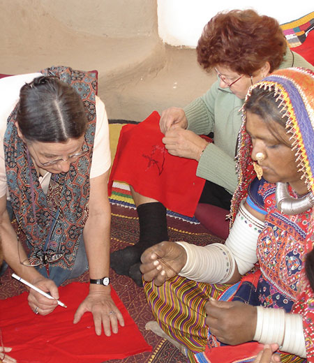

SIGNATURE TOUR TF-9

Duration: 18 D / 17 N
Destinations: Delhi - Agra - Ahmedabad - Morbi - Hodka Village - Rajkot - Sasan Gir - Diu - Mumbai
Journey Overview:
Begin your tour to Western India in New Delhi. After a befitting introduction to the exotic sights and smells of vibrant India in her Capital city. After a couple of nights here, and also taking in a memorable view of the Taj Mahal in Agra on a day excursion, fly to Ahmedabad. The city is an ode to the “bandhini”, or the “tie and dye” art of dyeing a fabric, and also the cotton capital of the country. It is then on to Morbi, for an eclectic stay at the renovated Darbargarh Palace. The 19th century Darbargadh Palace in Morbi has been passionately restored and offers an experience to see and “live” history amongst the few tourist destinations in Gujarat. Morbi is off the beaten track compared to other tourist places to see in Gujarat. There are some wonderful tourist places to see in Gujarat’s Morbi like The Jhulta Pul, the Art Deco Palace, the Nehru Gate, the Green Tower, and the Mani Mandir. Darbargadh Palace also hosts parties, intimate conferences and private weddings to capture your special moments, and is a must visit for travellers looking to experience unique tourist destinations in Gujarat. From Morbi, the journey winds to the extreme border at Hodka Village, a village of artisans. Crafts workshops in embroidery and leather work, where you can learn a range of techniques directly from the artisans, can be organized upon request with extra cost. (You need to inform us about one month before the actual visit date). Discover northern Kachchh through a rich and varied choice of activities - a visit to several artisan communities where you marvel at the beauty of Embroideries, Leather Works, Lacquer Work , Rogan Work, Copper Bell making, traditional pottery, wood carving, & more. Back at your village resort the experience continues with traditional dinners, folk music performances, bonfire nights, star-gazing (subject to availability and clear sky) and more interaction with the people of Hodka. The tour continues through Rajkot, and on to Sasan Gir, the home of the majestic Yellow maned King of the Jungle, the Lion. A jeep safari or two into the depths of the jungle to view the cats in their own territory inspires a deep respect for all Nature, and its components. Drive onto Diu, a quieter and more private version of Goa, with its pristine beaches. After a good respite from the wild outdoors, fly to Mumbai – the commercial capital of the country. Take in its luxury, and its sights – and then it is suddenly time to head home!
Itinerary Highlights:
Day 01: Arrive in Delhi and check into your preferred hotel.
Day 02 : Take a private sightseeing tour of Old and New Delhi, and a rickshaw ride through the markets at Old Delhi. Overnight at Delhi.
Day 03: Take a day excursion to Agra by train - view the Taj Mahal in all its splendor and return to Delhi for overnight stay.
Day 04: In the morning take a connecting flight to Ahmedabad, the capital of Gujarat. Upon arrival, you will be transferred to the hotel in Ahmedabad. In the afternoon you will visit the Gandhi ashram, the Akshardham temple. Overnight at Ahmedabad.
Day 05: In the morning you will visit the Hathee Singh Jain Temple, Jama Masjid, Calico museum of textiles. Overnight at Ahmedabad
Day 06: Ahmedabad - Morbi (about 202 kms, 3 hrs) : Post breakfast, drive to Morbi. Overnight stay at the Darbargarh Palace in Morbi.
Day 07: Overnight at Morbi
Day 08: Morbi - Hodka village (artisans village), Nr. Bhuj (about 240 kms, 4 hrs) In the morning after having breakfast drive to Hodka village. In the evening arrive in Dwarka and drive to the hotel.
Day 09: Overnight at Hodka village resort
Day 10: Drive from Village to Rajkot (about 240 kms, 4 hrs)
Day 11: Private sightseeing - Rajkot
Day 12: Rajkot - Sasan Gir(about 170kms, 3 hrs)
Day 13: Sasan Gir : In the morning and afternoon enjoy the jeep safari in Gir National Park. In the evening take a nature walk with an ornithology expert to a riverside spot near Gir Birding Lodge.
Day 14: Drive to Diu from Sasan Gir after breakfast. Check into hotel . Immediately, leave for half day sightseeing and admire the Diu fort & St. Paul's church along with the local markets. Spend the evening at the lovely beaches or at the hotel. Overnight in Diu.
Day 15: Day at leisure in Diu - spend it sun bathing! Overnight in Diu
Day 16: Fly to Mumbai. Arrive in Mumbai, and check in to your preferred hotel.
Day 17: City Sightseeing tour - see the amazing Dhobi Ghat - a mammoth washing place & Private excursion to Elephanta Caves. Overnight in Mumbai.
Day 18 : Departure
Where to Stay:
Ahmedabad : The Fortune Landmark / Courtyard by Marriott / Taj Gateway / Radisson / Hyatt
Morbi : Darbargarh Palace
Hodka Village : Shaam - e- Sarhad
Rajkot : The Imperial Palace
Sasan Gir : The Fern Gir Forest Resort / Taj Gateway Sasan Gir
Diu : Azzaro Resort & Spa
Mumbai: All Taj / Oberoi / Hyatt properties
Inclusions
- Hotel / Rooms Category as per specified or similar. The hotel accommodation is based on two persons sharing one double room with private facilities and daily American buffet breakfast (Some may include further meals)
- Private touring with your own personal guides, air conditioned vehicle (sedan, SUV or Tempo) with Chauffeur.
- Entrance fees at all monuments and museums mentioned in the itinerary
- Child above 2 years and below 11 years without extra bed, breakfast cost to be settled directly by the guest
- 02 private jeep safaris in Sasan Gir.
- Bottled water throughout the tour.
- Around-the-clock support in each destination during your trip
- Rickshaw ride at Old Delhi
- Internal flights if any.
Exclusions
- Anything not mentioned under 'Package Inclusions'
- All personal expenses, portages, optional tours and extra meals / snacks - Camera fees, alcoholic/non-alcoholic beverages
- Tips, laundry and phone calls
- Medical and travel insurance
- Any increase of Govt. taxes at time of operating the tour
- Any expense incurred or loss caused by reasons beyond our control such as bad weather, natural calamities, landslides, floods, flight delays, rescheduling, cancellations, any accidents, medical evacuations, riots/strikes/war, & etc.